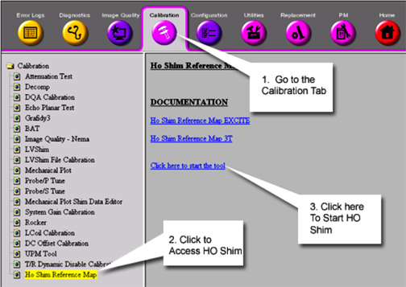
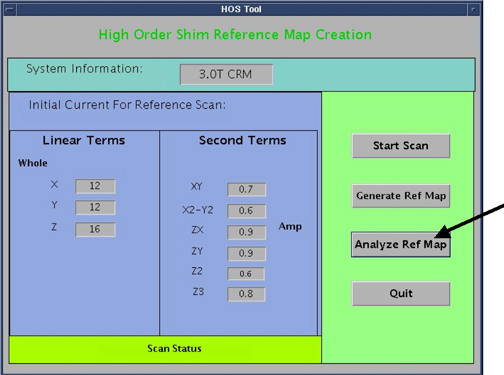

Operating Documentation
Direction 5500113, Rev# 3
Discovery MR450 1.5T Service Methods
Module Version 1.0, Version Date 4/25/07
Operating Documentation |
| Required Persons | Preliminary Reqs | Procedure | Finalization |
|---|---|---|---|
| 1 | Not Applicable | 15 mins | Not Applicable |
This document explains how to verify successful completion of High Order Shim Reference Map creation
| Condition | Reference | Effectivity |
|---|---|---|
Complete HOShim Reference Map Creation. | - | - |
Start the High Order Shim Tool through the Common Service Desktop (CSD). See Illustration 1.
Illustration 1: Starting High Order Shim Tool

The High Order Shim GUI will appear as shown in Illustration 2. Select Analyze Ref Map.
Illustration 2: High Order Shim Tool

he HOSH Ref Map Analyzer will appear. See Illustration 3. Select Ref file and then select the Shim reference map that you want to analyze by double clicking on the proper file.
| NOTE: | If the FOV is either 24cm or 28cm, make sure the FOV is set to Small. If the FOV is 48, make sure the FOV is set to Large. See Illustration 3 for location of FOV field. (Illustration 3) |
Illustration 3: HOSM Reference Map Analyzer

After When the proper file is selected, hit CALCULATE on the HOSM Ref Map Analyzer. Data for the selected map will appear.
Review the x, x - y, y - z, z files. See Illustration 3. The values circled in blue should be between 0.90 and 1.0. This indicates that the High Order Shim Reference Map has been successfully created.
No finalization steps.